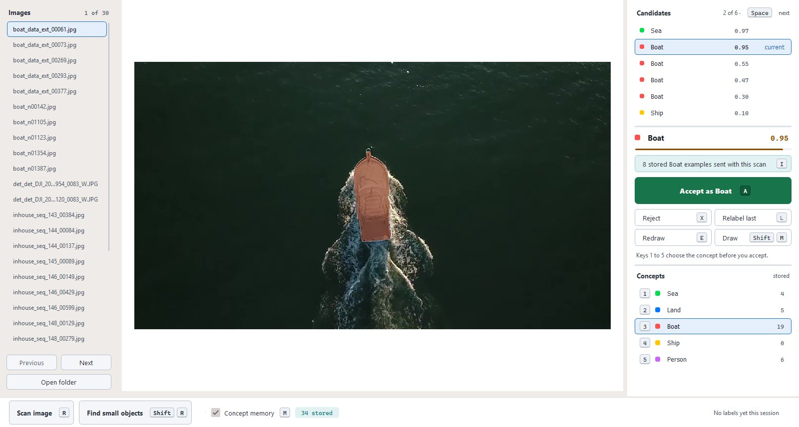
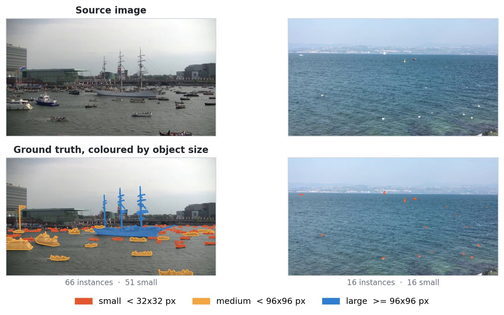
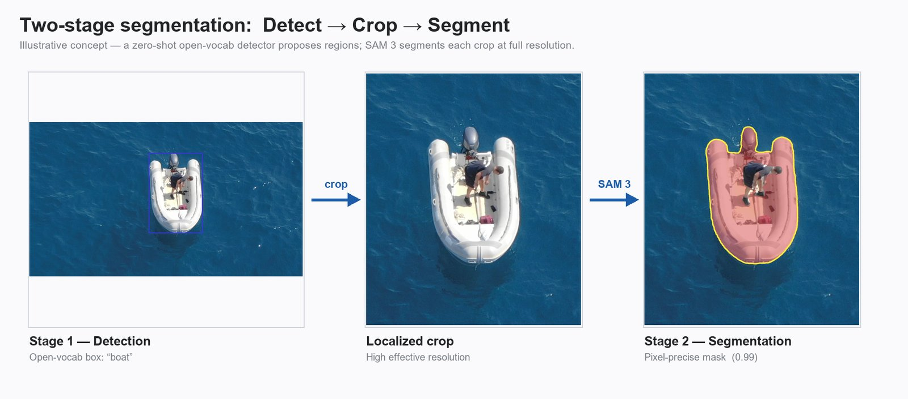
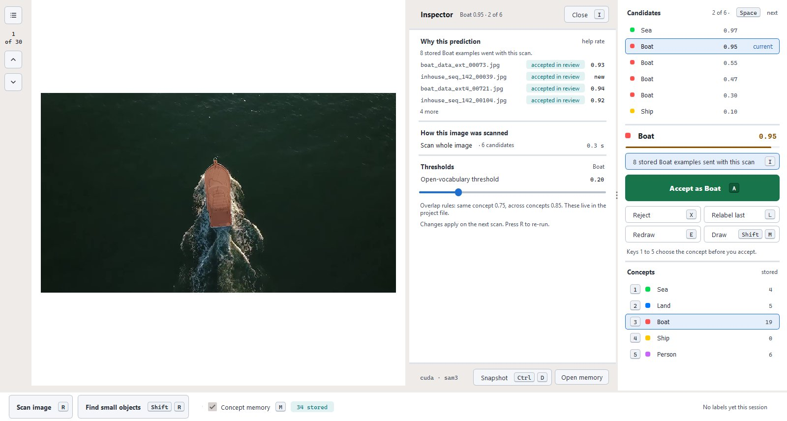
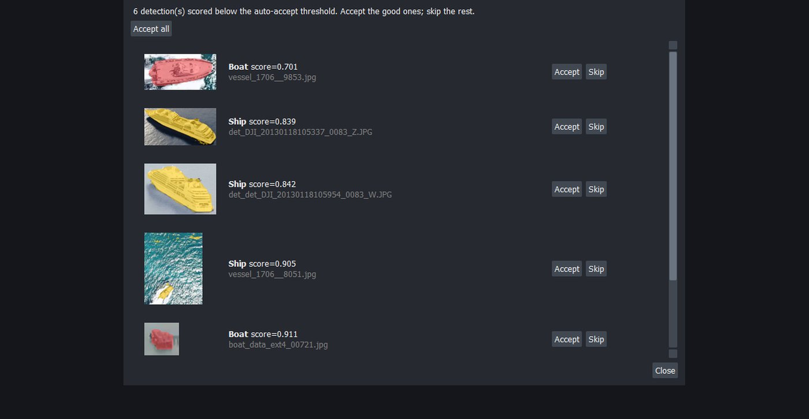

What I'm trying to achieve
Labeling maritime and satellite imagery by hand is slow and expensive. The images are large, and the objects in them, such as boats, ships and people in the water, are often tiny and easy to miss.
AI segmentation models can help, but they start from scratch on every image. They never learn from the corrections people make. My goal is a tool that cuts the human effort of labeling while keeping quality high, and that keeps getting better at the user's own kind of imagery.

The idea
A foundation segmentation model outlines the objects it finds in each image.
The user accepts, relabels or redraws each suggestion. Nothing is saved without a human decision.
Accepted and corrected examples are remembered and used to improve suggestions on future images.

The tool
The application is a desktop tool built for people who label imagery all day. It is fast and keyboard-driven. It supports separate projects, each with its own categories, for example sea, land, boats, ships and people.


Where it stands
The application works end to end on maritime, satellite and vehicle imagery. Next, I am running a user study to measure how much labeling time it saves compared with labeling by hand and with standard AI-assisted tools.